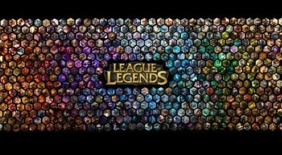

미국 라이엇 게임즈(Riot Games)에서 개발한 게임으로, 2009년 10월부터 서비스가 시작됐고 우리나라에서는 2012년 1월 정식 출시됐다. 10명이 5명씩 팀을 이루어 상대팀과 싸우는 대전게임으로, 사용자들이 직접 캐릭터를 선택해 상대방 진영을 초토화시켜야 게임이 끝난다. 이는 끝없이 이어지는 실시간 전투와 협동을 통한 팀플레이, RTS(Real-Time Strategy)와 RPG(Role playing game)를 하나의 게임에서 동시에 즐길 수 있다는 특징이 있다.
